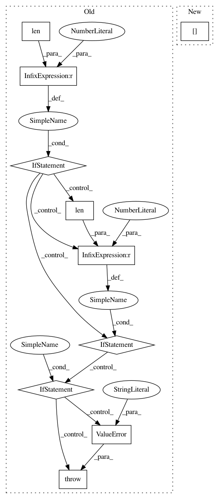

023331ec2a7b0086abfc81eca16c84a1692ee653,keras/layers/convolutional.py,Cropping2D,__init__,#Cropping2D#Any#Any#,1754
Before Change
self.cropping = tuple(cropping)
if len(self.cropping) != 2:
raise ValueError("`cropping` must be a tuple length of 2.")
if len(self.cropping[0]) != 2:
raise ValueError("`cropping[0]` must be a tuple length of 2.")
if len(self.cropping[1]) != 2:
raise ValueError("`cropping[1]` must be a tuple length of 2.")
if data_format not in {"channels_last", "channels_first"}:
raise ValueError("data_format must be in {"channels_last", "channels_first"}.")
self.data_format = data_format
self.input_spec = [InputSpec(ndim=4)]
def build(self, input_shape):
After Change
cropping[0], 2,
"1st entry of cropping")
width_cropping = conv_utils.normalize_tuple(
cropping[1], 2,
"2nd entry of cropping")
self.cropping = (height_cropping, width_cropping)
else:
In pattern: SUPERPATTERN
Frequency: 4
Non-data size: 10
Instances
Project Name: keras-team/keras
Commit Name: 023331ec2a7b0086abfc81eca16c84a1692ee653
Time: 2017-02-09
Author: francois.chollet@gmail.com
File Name: keras/layers/convolutional.py
Class Name: Cropping2D
Method Name: __init__
Project Name: keras-team/keras
Commit Name: 023331ec2a7b0086abfc81eca16c84a1692ee653
Time: 2017-02-09
Author: francois.chollet@gmail.com
File Name: keras/layers/convolutional.py
Class Name: Cropping3D
Method Name: __init__
Project Name: keras-team/autokeras
Commit Name: 19feb08bf8b7c9ab8b2cf2c4d5ec74541b84b103
Time: 2017-12-15
Author: jhfjhfj1@gmail.com
File Name: autokeras/generator.py
Class Name: RandomConvClassifierGenerator
Method Name: _get_pool_layer_func
Project Name: keras-team/autokeras
Commit Name: 19feb08bf8b7c9ab8b2cf2c4d5ec74541b84b103
Time: 2017-12-15
Author: jhfjhfj1@gmail.com
File Name: autokeras/generator.py
Class Name: RandomConvClassifierGenerator
Method Name: _get_shape